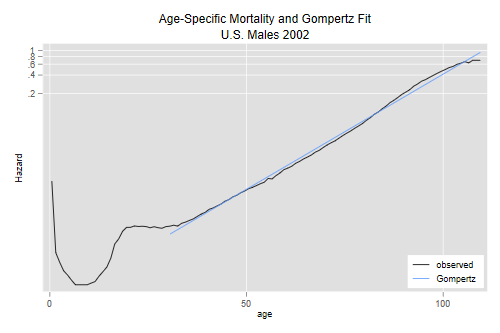
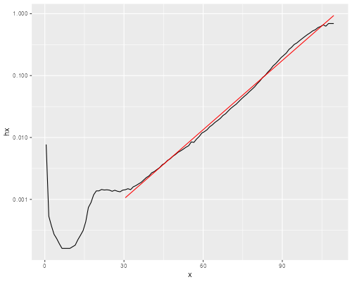

<h2 id="the-gompertz-model">The Gompertz Model</h2>
<p>We will illustrate fitting a Gompertz model to U.S. adult mortality.
The survival function for U.S. males in 2002 is available in the
datasets section of this website.</p>

{% include srtabs.html %}

<pre class='stata'>. infile age lx using ///
>   https://grodri.github.io/datasets/us2002m.dat, clear
(111 observations read)
</pre>
<pre class='r'>> us &lt;- read.table("https://grodri.github.io/datasets/us2002m.dat",
+   header = FALSE, col.names = c("age", "lx"))
</pre>
<p>We will compute the cumulative hazard by taking logs, the average
hazard for each age by differencing, and the age midpoint by
averaging:</p>
<pre class='stata'>. quietly replace lx = lx / 100000

. gen Hx = - log(lx)

. gen hx = H[_n+1] - H
(1 missing value generated)

. gen am = (age + age[_n+1])/2
(1 missing value generated)

. line hx am, yscale(log)
</pre>
<p></p>
<pre class='r'>> library(dplyr)
> library(ggplot2)
> us &lt;- mutate(us, lx = lx/100000, Hx = -log(lx))
> midpoints &lt;- function(x) (x[-1] + x[-length(x)])/2
> ush &lt;- data.frame(hx = diff(us$Hx), x = midpoints(us$age))
> ggplot(ush, aes(x, hx)) + geom_line() + scale_y_log10()
</pre>
<p></p>
<p>We see the familiar shape and note that it is quite linear for
adults, as shown by the red line based on a Gompertz fit. How do we get
that?</p>
<p>We just regress the log-hazard on age for ages 30 and older. To make
the constant a bit more meaningful we will measure age from 30</p>
<pre class='stata'>. gen loghx = log(hx)
(1 missing value generated)

. gen am30 = am - 30
(1 missing value generated)

. regress loghx am30 if age >= 30

      Source │       SS           df       MS      Number of obs   =        80
─────────────┼──────────────────────────────────   F(1, 78)        =  21039.26
       Model │  314.127049         1  314.127049   Prob > F        =    0.0000
    Residual │  1.16458015        78  .014930515   R-squared       =    0.9963
─────────────┼──────────────────────────────────   Adj R-squared   =    0.9963
       Total │  315.291629        79  3.99103328   Root MSE        =    .12219

─────────────┬────────────────────────────────────────────────────────────────
       loghx │ Coefficient  Std. err.      t    P>|t|     [95% conf. interval]
─────────────┼────────────────────────────────────────────────────────────────
        am30 │   .0858109   .0005916   145.05   0.000     .0846331    .0869886
       _cons │  -6.889114   .0273242  -252.12   0.000    -6.943512   -6.834716
─────────────┴────────────────────────────────────────────────────────────────
</pre>
<pre class='r'>> lf &lt;- lm(log(hx) ~ I(x - 30), data = filter(ush, x > 30))
> summary(lf)

Call:
lm(formula = log(hx) ~ I(x - 30), data = filter(ush, x > 30))

Residuals:
     Min       1Q   Median       3Q      Max 
-0.29936 -0.10847 -0.00201  0.09795  0.29813 

Coefficients:
              Estimate Std. Error t value Pr(>|t|)    
(Intercept) -6.8891145  0.0273241  -252.1   &lt;2e-16 ***
I(x - 30)    0.0858109  0.0005916   145.1   &lt;2e-16 ***
---
Signif. codes:  0 '***' 0.001 '**' 0.01 '*' 0.05 '.' 0.1 ' ' 1

Residual standard error: 0.1222 on 78 degrees of freedom
Multiple R-squared:  0.9963,	Adjusted R-squared:  0.9963 
F-statistic: 2.104e+04 on 1 and 78 DF,  p-value: &lt; 2.2e-16
</pre>
<p>We get an R-squared of 0.9963 and estimates of -6.889 for the
constant and 0.0858 for the slope.</p>
<p>The constant tells us the hazard at exact age 30 is just about one
per thousand, and the slope tells us that the hazard increases 8.58% per
year starting at age 30 (so it doubles in just over 8 years.)</p>
<p>The code used to add the red line to the plot was</p>
<pre class='stata'>. predict loghf
(option xb assumed; fitted values)
(1 missing value generated)

. gen hf = exp(loghf)
(1 missing value generated)

. twoway (line hx am) (line hf am if age >=30) ///
> , yscale(log) ytitle(Hazard) xtitle(age) ///
>   title("Age-Specific Mortality and Gompertz Fit") ///
>   subtitle("U.S. Males 2002") ///
>   legend(order(1 "observed" 2 "Gompertz") ring(0) pos(5) col(1)) 

. graph export usm02g.png, width(500) replace
file usm02g.png saved as PNG format
</pre>
<pre class='r'>> ushf &lt;- filter(ush, x > 30) %>%  mutate(hf = exp(fitted(lf)))
> ggplot(ush, aes(x, hx)) + geom_line() + scale_y_log10() +
+   geom_line(data=ushf, aes(x, hf), color = "red")
> ggsave("usm02gr.png", width = 500/72, height = 400/72, dpi = 72)  
</pre>
<p>We predict the log-hazard but exponentiate to get a fitted hazard.
(We usually get more meaningful labels if we let the software use a log
scale.)</p>
<p>The datasets section has the survival function for U.S. females (the
file is called <code>us2002f.dat</code>). Verify that age-specific
mortality at age 30 is much lower for women than men (about half!) and
that women seem to age a bit faster than men. But are adult female
mortality rates ever higher than men’s?</p>
<p>Note: Updated february 2016 using latest data from the Human
Mortality Database.</p>
